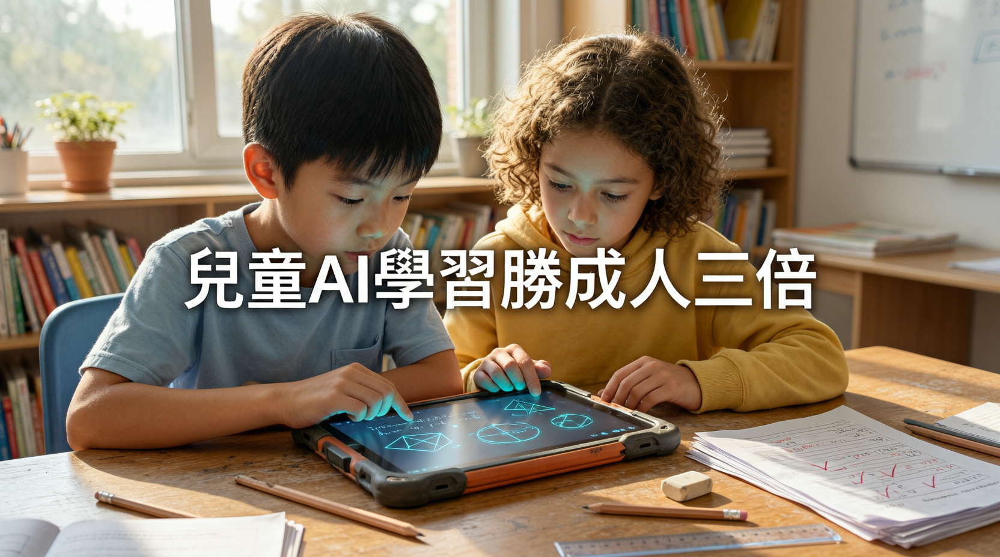

學習速度比成人快三倍 UNICEF 警告：兒童身處全球實驗

UNICEF 最新調查顯示，全球約 2,000 萬名兒童已使用 AI 工具，兒童接觸 AI 速度比成人快三倍。UNICEF 形容這代兒童正身處「一場全球實驗」當中，警告現行法規遠遠追不上 AI 使用速度，呼籲各國政府及科企正視。
「Disrupting Harm Phase 2」研究由 UNICEF 聯同 ECPAT International 及國際刑警組織合作進行，數據來自亞美尼亞、巴西、哥倫比亞等 10 個國家，每國訪問約 1,000 名 12-17 歲兒童及家長。
約十分之一受訪兒童表示會向 AI 尋求關於困擾自己事情的意見，估計有 1,300 萬名兒童使用 AI 協助學習及做功課。
三分之一兒童擔心 AI 被用作詐騙或散播失實資訊，四分之一兒童擔心相片或影片被 AI 篡改成深偽（deepfake）內容。
佛州入稟法院控告 OpenAI 及 Sam Altman，指控缺乏有效家長監控及年齡驗證機制保護未成年用戶，恐須承擔高達數十億美元（約港幣 78 億元）賠償。
UNICEF 形容這一代兒童正身處「一場全球實驗」（a global experiment）當中，強調 AI 對認知發展、情緒依賴及潛在傷害的影響數據仍在浮現階段，實際上是一整代人在全球實驗中成長。
「兒童較容易受到 AI 系統影響，包括其設計方式、背後的商業模式及個人資料被使用的情況。然而兒童本身卻缺乏能力去迴避或質疑這些系統，而且現時大部分 AI 治理都未有將兒童視為特定群體處理。」
— UNICEF 報告隨著愈來愈多兒童及青少年將 AI 工具融入日常學習與生活，各地政府及科企未來勢必加快制訂針對未成年用戶的規管框架。馬耳他等國家已率先推出全國性 AI 素養課程，在兒童接觸 AI 之前先做好教育配套。
| 調查數據 | 數字 | 佔受訪者比例 |
|---|---|---|
| 全球使用 AI 的兒童 | 約 2,000 萬 | — |
| 向 AI 求助解憂 | 逾 200 萬 | 約 10% |
| 用 AI 做功課 | 約 1,300 萬 | — |
| 擔心 AI 詐騙/失實資訊 | — | 33% |
| 擔心深偽內容 | — | 25% |